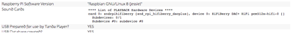

Diagnosing Faults
No sound and skips through a playlist
This has been traced to a loose connection between the Raspberry Pi computer and the sound card - The issue is usually reported as “no soundcard”. Obviously there is one – it’s in the case! But it seems it can become loose. Go to the setup/configuration app and click on the “System State” tab. This should show the following but if not, then try the following fix.

The solution is simply to open the case, pull the sound card carefully off the lower computer and then push back on. This act seems to clean the contacts and usually fixes the problem.
Remove the two screws as shown missing in the picture. Then gently pull the lid from the base. This should separate the two circuit boards as one is connected to the lid and one to the base. Once done, just push back together again and re-assemble.
The cause is possibly a little rough treatment causing the computer and sound card to move apart from each other a little bit.
The software
The Tanda Player is still a prototype and there may be issues in use. If you can reproduce an issue and if it prevents you from normal use then please contact David Goddard for assistance, as it may be possible to fix the issue.
No network
When the system starts up the Wifi-hotspot network should become available within about 10 to 15 seconds. Although you can connect to this network the actual Tanda Player applications will not yet be available.
If you do not get a network to connect to then it is likely to be either the main micro-SD card with the operating system on has become corrupt or the hardware has failed.
Check power supplies and check the SD card is firmly in place.
No Tanda Player application after 2 minutes
The software should start the web service up within a couple of minutes depending upon how many songs you have added etc.
If there is no sign of the application starting then the most likely cause is the corruption of the USB memory stick that the music is kept on. There are several reasons that this may occur:
· The device is coming to the end of its natural life and beginning to fail
· The Tanda Player was switched off or crashed without using the button on the home page to stop the device.
· No USB card?
It is always recommended to have a backup of anything on the USB devices as they can naturally fail.
Recovering from a crash
If your USB memory stick has acquired some corrupt files and as a result the system will not start, verify that the player itself is still OK by putting a new USB device in the player and let it initialize it. If the player then starts up the fault is most likely to be with one of the database files.
Each time the player starts up it copies all the database files to a folder also on the USB device. There are ten copies of the database in all.
In the top level folder of the backups is a text file with a number in it which is the number of the last back up written.
Put the USB device in a laptop and attempt to fix the device. Once done look at the backup folder and identify the last backup taken when you know it last worked OK. Simply copy the entire contents of this backup folder to the top level folder of the USB device replacing the corrupt database files with good ones.
Re-start the Tanda Player.
Bad files
Bad files are files found in the music folders that cannot be played at all or play but with audible artifacts such clicks or skips in the sound. Or a file may just suddenly stop.
The Tanda Player is fairly tolerant of files typically found in music libraries alongside the songs themselves. For example album artwork is often stored in JPEG files in the same folders as the tracks. Similarly operating systems add files such as “desktop.ini” to folders.
Rather than have an exhaustive list of file types to avoid, the system will instead try to play most things the first time you add it to the system. Upon opening the files it will determine whether it is a playable music file or not and even for those music files it will also check that it can be played properly. It does this by scanning the entire file at around 20 times normal playing speed in the background – about 5 to 10 seconds for most songs. If a file has some encoding issues it marks the files as such. Similarly if a file is simply not a music file it will be marked as such.
Marked files may be hidden from the Tanda Player’s normal operations in the same way the user can hide a song they do not wish to include in their collection.
In the configuration page there is a tab for “Music file warnings & errors” and this lists all songs that either the user or the system has hidden from use. It also lists those that appear OK but some errors were reported during the decoding. From here you can click a delete button to remove the file from the USB drive, you can click OK and it will updated to no longer be hidden the next time you start the system or you can click elsewhere on the row for the track to play it in order to check whether it does appear to play properly or not.
NOTE
– many songs are badly encoded but otherwise playable and errors such as
“Skipping … junk” is not normally an audible issue. However, “file growing?” occurs where the file
ended unexpectedly and the application simply wonders if it is being written at
the same time such as by a streaming application. These are usually useless as
music files and should be deleted.
The decoding errors are typically caused by corruptions at the time of encoding. They may or may not be audible as minor jitters in the playback or entire songs suddenly ending. For this reason you can play the marked songs by clicking on their filename and they will play and then click OK if they play well enough or delete them if not.
It is not recommended to keep lots of bad files as they take up room in the database and slow down some operations unnecessarily.

To force a re-assessment of your files (for example if you start to notice some songs misbehaving.
Once analysed you can remove songs individually (recommended) or remove the whole lot in one go.
If you tag some songs as unsuitable for use in the Tanda Player then you can remove all of those in one go too.
Once you have either deleted some files or marked them as OK after listening to them you will need to re-start the Tanda Player so that it re-scans the USB device and builds a new database from that information.